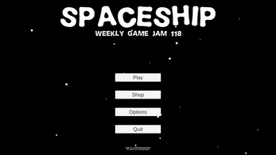
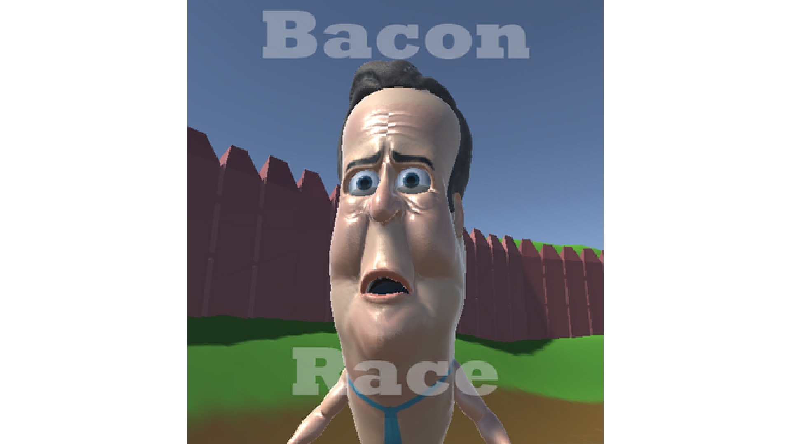
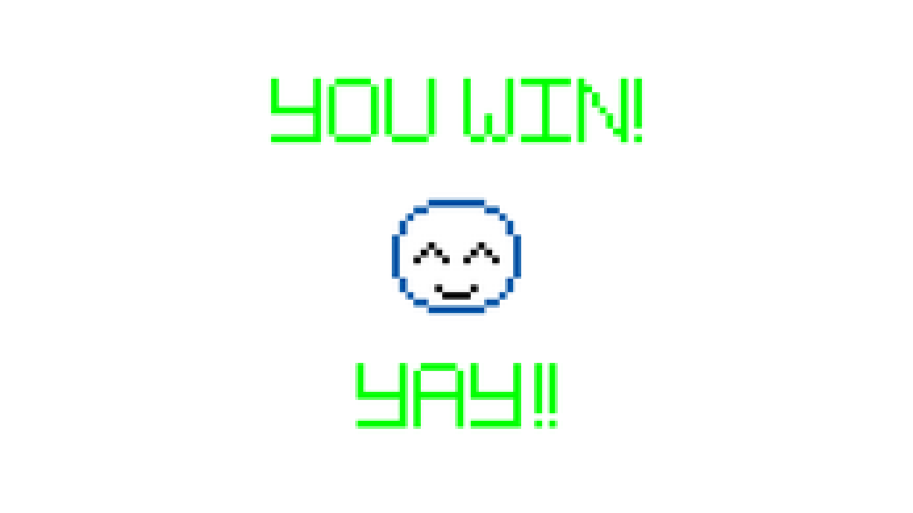

All Projects
Hayley Davi.es (2020)
Personal: Website

This project began after disliking certain aspects of the WordPress functionalities (mainly, embeds/iframes).
I decided it would be a cool idea to make my own website and try and do that from scratch.
After speaking to Christopher Robertson - who'd done the same thing prior to me, I began work on the site you're on right now!
The 👀 Bot (2020)
Personal: Discord Bot

This project began life as a simple idea, reacting with "👀" to a message containing "👀".
The project is simple but offers a lot of expandability.
I plan on working on this project more in the coming weeks to add more functionality to the bot.
The bot is run on CentOS and hosted via a VPS provided by Vultr.
Add The 👀 Bot to Your Server
Tinkering Audio
(2020)
Falmouth University: Year 1
(COMP120)

This project was developed as the Second Assignment of the COMP120 moodule at Falmouth University.
The project assigned was to make a program which manipulated audio.
Of the 4 contracts, we chose Contract 2: Ambience Audio Generation.
I worked along side my pair programmer, using Visual Studio 2019, C# and git in order to complete this project.
Overall for the project, we scored 69/100 marks which is a solid 2:1 and 1 mark off a 1st.
Credits: Daisy Baker
Tonnow Yn-Mysk (2020)
Falmouth University: Year 1
(GAM110)

This project was developed as part of GAM110's Creative Card Jam during Study Block 1 at Falmouth University, which lasted for 4 weeks.
The theme for this jam was Cornish Mythology and our project Modifier was Escape.
With that in mind, we decided to make a game surrounding the Cornish mythological creature called the Morgawr.
The game sets you as a humble Cornish fisherman.
You must catch as many fish as you can and escape from the clutches of the Morgawr, all before nightfall, where you will be able to upgrade your small fishing vessel ready for the next day.
Credits: Adam Arnett, Alistar Hambly, Ben Hooper, Ben Robinson, George Chandler, Joe Dawes, Michael Sollars, Sho Callanan and Tega Amrore
Tinkering Graphics
(2020)
Falmouth University: Year 1
(COMP120 - Assignment 1)

This project was developed as the First Assignment of the COMP120 moodule at Falmouth University.
The project assigned was to make a program which manipulated graphics.
Of the 6 contracts, we chose Contract 5: Novel Snapchat Filter.
I worked along side my pair programmer, using Visual Studio 2019, C# and git in order to complete this project.
Overall for the project, we scored 66/100 marks which is a solid 2:1.
Credits: Ross Hewitt
Spaceship (2019)
Personal: Game Jam

Delve into this simplistic, 8-bit spaceship game;
Fight hordes of enemy ships and upgrade your ship until you're name is known as an unstoppable force in the galaxy.
The game, simply called "Spaceship" pits you against enemies in the depths of space.
How far will you get?
This project was developed as participation in the Weekly Game Jam Week 118.
Credits: Pactrick De Arteaga
Flight Attendant
Simulator (2019)
Priestley College: Year 2
(Assignment 2)

Play as a flight attendant aboard a private jet, hand out food to customers and make sure they are satisfied.
In this fast paced VR experience, the wrong order could be a matter of life or death.
Only time will tell if you’re up to the challenge.
This project was developed during my time at Priestley College.
Credits: Josh Cornelius, Louis Muir and Reece Horsefield
Bacon Race (2019)
Priestley College: Year 2
(Falmouth Game Jam)

The theme for this game jam was "Bacon" so we decided to make a game about a not-so-flaccid David Cameron chasing a pig named Brexit - the pure political motivator.
I was the main programmer for this project, we worked in a team of 6 people.
Everything you see was made in about 15 hours over the course of 3 days, most of which was spent without an internet connection.
Credits: Bartosz Kościółek, Elliot Griffiths, Jack Keane, Matthew Roberts, Tom Goodier and Zac Cooper
Locked In (2018)
Priestley College: Year 2
(Assignment 1)
This game was made in part by three students studying at Priestley College.
The idea we had was similar to the "White Bear" episode of Black Mirror - where you are a criminal and this is your punishment; rather than prison, you are Locked In to an internal loop of repeating the same thing over and over.
Can you break the cycle?
Credits: Reece Horsefield, Zac Pridden
Joe's Conquest (2018)
Priestley College: Year 1
(The Game Project)

As part of my college course I had to make a 2D Platfomer game within Unity.
After being trapped in a computer by a high school bully and notorious hacker Adam, Joe must find his way through the computer and escape.
He must rescue his love, Laura, from Adam's clutches.
But will he do it?